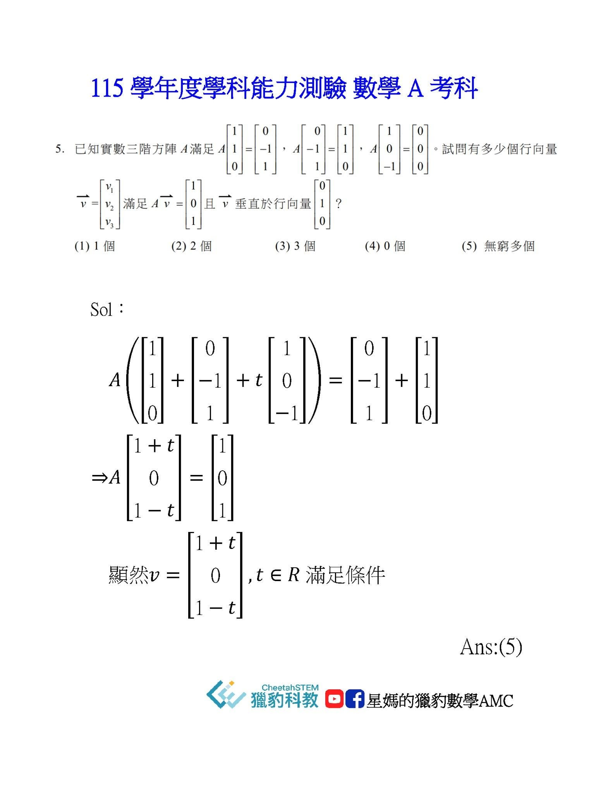

115學測數A考後建議
今年學測數A 讓許多自詡為數學高手的學生 踢到鐵板！
一個很大的迷思，許多學生與家長總認為既然學測只是考「課綱」的內容，因此只要學到「能應付」學測的難度即可，何必需要那些加深、加廣的「額外學習」呢⁉️
但已經有許多次的經驗與教訓：每年考題的難度難以捉摸，學生在考場中的表現也常因緊張或壓力而失常。
這次學生不容易拿分的特別集中在幾道題
（P5,P12,P17…非選題組），這些題目難度其實不大，而是計算量比較大。
因此推估90分以上的高分人數少 ，一大堆15級分會擠在80多。
獵豹一再強調 ：適度加深、加廣的輕競賽訓練，對於升學考試表現的穩定性有莫大的助益‼️
用AMC,中國大陸高考題,日本重點大學入學試題來訓練學生
當學測、分科的試題難度提高時 是非常有利的。
AMC常訓練學生要特別觀察數據，利用「設計」避開繁瑣的計算，
以P5為例，如能利用題目「刻意」安排的數據，很容易便可看出答案，而避開麻煩的計算。（見下圖）
獵豹在國中的加深課程特別強調平面幾何的訓練（經過教育當局多年的努力幾乎讓學生平面幾何能力半殘），那些訓練有素的國中生可以不必透過三角函數的方式 只用相似形的觀念便可解決P17。（國中同學可動手試試）
許多同學們在考場中感到不適的原因，是因為一些考題的「樣貌」跟傳統補習班或參考書的考古題型很不同。
我常說的：「學生不怕難 但怕新！」尤其是那些以刷題、套路為訓練主軸的同學們。
最後我建議高一高二的同學可以拿這份學測卷，找一些學過單元的題目練練手感，找出自己的盲點與缺少，及早調整學習的方法。
獵豹數學教得太深嗎？
[獵豹AIME衝刺課程]
科學班備考/數學高手訓練[FA00課程]
